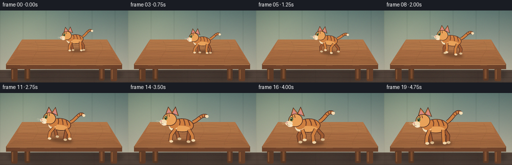
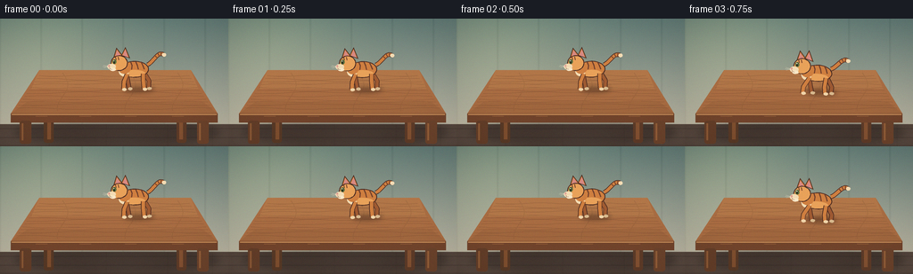

CODING AGENTS AS PIXEL WORLD MODELS
traex/DeepSeek-V4.1-Flash · dynamic_spatial_relationship_0012
点击播放 · 原生 RGB 像素
逐轮保存的候选
回放视频、检查图与代码变化。
每份候选均可单独播放。实际图片检查记录在下方工具轨迹中。
候选 01播放与检查图
点击播放 · 原生 RGB 像素

展开代码变化
--- 上一保存版本
+++ 本次保存版本
@@ -0,0 +1,545 @@
+"""Procedural RGB animation: a tabby cat runs from a tabletop to its front edge."""
+
+from __future__ import annotations
+
+import math
+from pathlib import Path
+
+import numpy as np
+from PIL import Image, ImageDraw, ImageFilter
+
+from artifact_io import save
+
+
+WIDTH = 256
+HEIGHT = 144
+FRAMES = 20
+FPS = 4.0
+SS = 4 # Supersampling factor for clean edges at the small delivery size.
+
+
+def srgb(hex_color: str, alpha: int | None = None):
+ value = hex_color.lstrip("#")
+ rgb = tuple(int(value[index : index + 2], 16) for index in (0, 2, 4))
+ return rgb + (alpha,) if alpha is not None else rgb
+
+
+def scaled_box(box):
+ return tuple(round(value * SS) for value in box)
+
+
+def smoothstep(value: float) -> float:
+ value = max(0.0, min(1.0, value))
+ return value * value * (3.0 - 2.0 * value)
+
+
+def mix(a: float, b: float, amount: float) -> float:
+ return a + (b - a) * amount
+
+
+def mix_color(a, b, amount: float):
+ return tuple(round(mix(x, y, amount)) for x, y in zip(a, b))
+
+
+def make_wall() -> Image.Image:
+ """Build a softly lit interior wall with restrained paneling."""
+ w, h = WIDTH * SS, HEIGHT * SS
+ yy, xx = np.mgrid[0:h, 0:w].astype(np.float32)
+ yn = yy / max(1, h - 1)
+ xn = xx / max(1, w - 1)
+
+ top = np.array([96, 121, 116], dtype=np.float32)
+ bottom = np.array([201, 190, 168], dtype=np.float32)
+ wall = top[None, None, :] * (1.0 - yn[..., None]) + bottom[None, None, :] * yn[..., None]
+
+ # A broad window-like wash of warm light enters from the upper left.
+ glow = np.exp(-(((xn - 0.16) / 0.38) ** 2 + ((yn - 0.12) / 0.52) ** 2))
+ wall += glow[..., None] * np.array([26.0, 22.0, 10.0], dtype=np.float32)
+
+ # Very low-contrast vertical wall boards.
+ board_phase = np.abs(((xx / (46.0 * SS)) % 1.0) - 0.5)
+ wall -= ((board_phase > 0.475) & (yy < 119 * SS))[..., None] * np.array([7.0, 7.0, 6.0])
+
+ floor_y = 119 * SS
+ floor_mask = yy >= floor_y
+ floor_tone = np.array([83, 68, 59], dtype=np.float32)
+ floor_variation = np.sin(xx * 0.014) * 2.0 + np.cos(yy * 0.035) * 1.5
+ wall[floor_mask] = floor_tone + floor_variation[floor_mask, None]
+
+ # Subtle floorboards give the front edge of the table a grounded setting.
+ for line_y in (124, 134, 143):
+ band = np.abs(yy - line_y * SS) < 0.65 * SS
+ wall[band] *= 0.90
+ for line_x in (55, 119, 188, 238):
+ band = (np.abs(xx - line_x * SS) < 0.5 * SS) & floor_mask
+ wall[band] *= 0.94
+
+ return Image.fromarray(np.clip(wall, 0, 255).astype(np.uint8), "RGB")
+
+
+def draw_table(scene: Image.Image):
+ draw = ImageDraw.Draw(scene)
+
+ # Soft cast shadow under the table and its legs.
+ shadow = Image.new("RGBA", scene.size, (0, 0, 0, 0))
+ shadow_draw = ImageDraw.Draw(shadow)
+ shadow_draw.ellipse(scaled_box((16, 114, 246, 142)), fill=(31, 24, 22, 92))
+ shadow_draw.ellipse(scaled_box((20, 118, 238, 141)), fill=(31, 24, 22, 82))
+ shadow = shadow.filter(ImageFilter.GaussianBlur(4.2 * SS))
+ scene.alpha_composite(shadow) if scene.mode == "RGBA" else scene.paste(shadow, (0, 0), shadow)
+
+ # Back legs, seen through the open space below the table.
+ draw.rounded_rectangle(
+ scaled_box((49, 112, 60, 140)),
+ radius=3 * SS,
+ fill=srgb("#563825"),
+ )
+ draw.rounded_rectangle(
+ scaled_box((198, 112, 209, 140)),
+ radius=3 * SS,
+ fill=srgb("#5c3a27"),
+ )
+ draw.rectangle(scaled_box((53, 116, 57, 136)), fill=srgb("#7d4d2e"))
+ draw.rectangle(scaled_box((201, 116, 205, 136)), fill=srgb("#815031"))
+
+ # Tabletop in perspective: narrower at the back, broad at the front.
+ top_polygon = [
+ (44 * SS, 58 * SS),
+ (214 * SS, 58 * SS),
+ (244 * SS, 107 * SS),
+ (12 * SS, 107 * SS),
+ ]
+ draw.polygon(top_polygon, fill=srgb("#a86c42"))
+
+ # Warmer highlight near the back and a darker front lip create depth.
+ top_glow = Image.new("RGBA", scene.size, (0, 0, 0, 0))
+ top_draw = ImageDraw.Draw(top_glow)
+ top_draw.polygon(
+ [
+ (44 * SS, 58 * SS),
+ (214 * SS, 58 * SS),
+ (222 * SS, 79 * SS),
+ (35 * SS, 79 * SS),
+ ],
+ fill=(224, 166, 104, 42),
+ )
+ top_draw.polygon(
+ [
+ (30 * SS, 94 * SS),
+ (228 * SS, 94 * SS),
+ (244 * SS, 107 * SS),
+ (12 * SS, 107 * SS),
+ ],
+ fill=(75, 42, 29, 25),
+ )
+ scene.paste(top_glow, (0, 0), top_glow)
+
+ # Fine wood grain, following the perspective of the table.
+ grain = Image.new("RGBA", scene.size, (0, 0, 0, 0))
+ grain_draw = ImageDraw.Draw(grain)
+ for index in range(12):
+ t = (index + 1) / 13.0
+ y = mix(61, 104, t)
+ half_width = mix(82, 112, t)
+ bend = 1.4 * math.sin(index * 1.8)
+ points = []
+ for step in range(17):
+ u = step / 16.0
+ x = 128 + (u * 2.0 - 1.0) * half_width
+ py = y + bend * math.sin(u * math.pi) + 0.7 * math.sin((u * 5.0 + index) * math.pi)
+ points.append((round(x * SS), round(py * SS)))
+ grain_draw.line(points, fill=(73, 42, 29, 54), width=max(1, round(0.8 * SS)))
+ for offset in (-58, 18, 71):
+ points = []
+ for step in range(13):
+ t = step / 12.0
+ points.append(
+ (
+ round((128 + offset + 6 * math.sin(t * 5.0)) * SS),
+ round(mix(61, 104, t) * SS),
+ )
+ )
+ grain_draw.line(points, fill=(80, 47, 30, 34), width=max(1, round(0.65 * SS)))
+ scene.paste(grain, (0, 0), grain)
+
+ # Front edge and its lit bevel.
+ draw.polygon(
+ [
+ (12 * SS, 107 * SS),
+ (244 * SS, 107 * SS),
+ (244 * SS, 117 * SS),
+ (12 * SS, 117 * SS),
+ ],
+ fill=srgb("#70432b"),
+ )
+ draw.line(
+ [(13 * SS, 108 * SS), (243 * SS, 108 * SS)],
+ fill=srgb("#c58b57"),
+ width=max(1, round(1.2 * SS)),
+ )
+ for x in (40, 89, 140, 193):
+ draw.line(
+ [(x * SS, 110 * SS), ((x + 13) * SS, 110 * SS)],
+ fill=srgb("#8d5a37"),
+ width=max(1, round(0.65 * SS)),
+ )
+
+ # Front legs overlap the floor and make the table's front edge explicit.
+ draw.rounded_rectangle(scaled_box((22, 115, 35, 141)), radius=3 * SS, fill=srgb("#623d28"))
+ draw.rounded_rectangle(scaled_box((221, 115, 234, 141)), radius=3 * SS, fill=srgb("#6a422b"))
+ draw.line([(25 * SS, 118 * SS), (25 * SS, 137 * SS)], fill=srgb("#8b5835"), width=2 * SS)
+ draw.line([(224 * SS, 118 * SS), (224 * SS, 137 * SS)], fill=srgb("#925d38"), width=2 * SS)
+
+
+def transform_points(points, center, scale, angle):
+ cosine = math.cos(angle)
+ sine = math.sin(angle)
+ cx, cy = center
+ transformed = []
+ for x, y in points:
+ sx, sy = x * scale, y * scale
+ transformed.append(
+ (
+ round((cx + sx * cosine - sy * sine) * SS),
+ round((cy + sx * sine + sy * cosine) * SS),
+ )
+ )
+ return transformed
+
+
+def ellipse_polygon(cx, cy, rx, ry, count=36):
+ return [
+ (
+ cx + rx * math.cos(2.0 * math.pi * index / count),
+ cy + ry * math.sin(2.0 * math.pi * index / count),
+ )
+ for index in range(count)
+ ]
+
+
+def cubic_bezier(points, samples=24):
+ p0, p1, p2, p3 = points
+ result = []
+ for index in range(samples + 1):
+ t = index / samples
+ u = 1.0 - t
+ result.append(
+ (
+ u**3 * p0[0] + 3 * u**2 * t * p1[0] + 3 * u * t**2 * p2[0] + t**3 * p3[0],
+ u**3 * p0[1] + 3 * u**2 * t * p1[1] + 3 * u * t**2 * p2[1] + t**3 * p3[1],
+ )
+ )
+ return result
+
+
+def limb(
+ draw,
+ center,
+ scale,
+ angle,
+ shoulder,
+ knee,
+ foot,
+ color,
+ outline,
+ width=5.3,
+ paw_color="#f0d5aa",
+):
+ points = transform_points([shoulder, knee, foot], center, scale, angle)
+ draw.line(points, fill=srgb(outline), width=round((width + 1.8) * scale * SS), joint="curve")
+ draw.line(points, fill=srgb(color), width=round(width * scale * SS), joint="curve")
+ paw = transform_points(ellipse_polygon(foot[0] + 1.5, foot[1] + 0.4, 3.5, 2.4, 18), center, scale, angle)
+ draw.polygon(paw, fill=srgb(paw_color))
+
+
+def draw_cat(scene: Image.Image, center, scale, angle, phase, running, crouch):
+ """Draw a readable orange tabby in side profile, facing toward frame-left."""
+ draw = ImageDraw.Draw(scene, "RGBA")
+ outline = "#4a2b22"
+ fur = "#cf7f40"
+ fur_light = "#e9a25a"
+ fur_dark = "#9e5a32"
+ cream = "#f3dcb4"
+ pink = "#d88983"
+
+ body_bob = -1.8 * abs(math.cos(phase)) if running else 0.0
+ body_center = (center[0], center[1] + body_bob + crouch * 3.2)
+ body_angle = angle
+
+ # Tail, drawn behind the torso with a relaxed S-curve and three dark rings.
+ sway = math.sin(phase * 0.48) * (3.2 if not running else 5.0)
+ tail_curve = cubic_bezier(
+ [
+ (20, -7),
+ (31, -12 + sway * 0.2),
+ (36, -29 + sway),
+ (46, -22 + sway * 0.6),
+ ]
+ )
+ tail_points = transform_points(tail_curve, body_center, scale, body_angle)
+ draw.line(tail_points, fill=srgb(outline), width=round(7.1 * scale * SS), joint="curve")
+ draw.line(tail_points, fill=srgb(fur), width=round(5.0 * scale * SS), joint="curve")
+ for t in (0.48, 0.68, 0.84):
+ index = min(len(tail_curve) - 2, max(1, round(t * (len(tail_curve) - 1))))
+ px, py = tail_curve[index]
+ qx, qy = tail_curve[index + 1]
+ dx, dy = qx - px, qy - py
+ length = max(0.001, math.hypot(dx, dy))
+ nx, ny = -dy / length, dx / length
+ ring = transform_points(
+ [(px - nx * 3.2, py - ny * 3.2), (px + nx * 3.2, py + ny * 3.2)],
+ body_center,
+ scale,
+ body_angle,
+ )
+ draw.line(ring, fill=srgb("#70402c"), width=max(1, round(1.4 * scale * SS)))
+ tail_tip = transform_points(ellipse_polygon(46, -22 + sway * 0.6, 3.2, 3.0, 16), body_center, scale, body_angle)
+ draw.polygon(tail_tip, fill=srgb(cream))
+
+ if running:
+ front_near_x = -15 + 7.5 * math.sin(phase)
+ front_far_x = -11 - 7.5 * math.sin(phase)
+ back_near_x = 15 - 8.0 * math.sin(phase)
+ back_far_x = 18 + 8.0 * math.sin(phase)
+ front_near_lift = max(0.0, math.sin(phase)) * 6.0
+ front_far_lift = max(0.0, -math.sin(phase)) * 6.0
+ back_near_lift = max(0.0, -math.sin(phase)) * 5.0
+ back_far_lift = max(0.0, math.sin(phase)) * 5.0
+ elif crouch > 0:
+ front_near_x, front_far_x = -22, -8
+ back_near_x, back_far_x = 12, 21
+ front_near_lift = front_far_lift = 0
+ back_near_lift = back_far_lift = 0
+ else:
+ front_near_x, front_far_x = -18, -9
+ back_near_x, back_far_x = 14, 21
+ front_near_lift = front_far_lift = 0
+ back_near_lift = back_far_lift = 0
+
+ crouch_bend = crouch * 4.0
+ limb(
+ draw,
+ body_center,
+ scale,
+ body_angle,
+ (-13, 5),
+ (front_far_x - 2, 19 + crouch_bend),
+ (front_far_x, 30 - front_far_lift),
+ fur_dark,
+ outline,
+ width=5.0,
+ paw_color="#d8b98e",
+ )
+ limb(
+ draw,
+ body_center,
+ scale,
+ body_angle,
+ (14, 5),
+ (back_far_x + 1, 18 + crouch_bend),
+ (back_far_x, 30 - back_far_lift),
+ fur_dark,
+ outline,
+ width=5.2,
+ paw_color="#d8b98e",
+ )
+
+ body = transform_points(ellipse_polygon(0, 0, 22, 13, 44), body_center, scale, body_angle)
+ draw.polygon(body, fill=srgb(fur), outline=srgb(outline), width=max(1, round(1.25 * scale * SS)))
+
+ # Soft belly and shoulder planes.
+ belly = transform_points(ellipse_polygon(-1, 6.3, 17.2, 5.4, 32), body_center, scale, body_angle)
+ draw.polygon(belly, fill=srgb(fur_light))
+ chest = transform_points(ellipse_polygon(-17, 2, 8, 9, 24), body_center, scale, body_angle)
+ draw.polygon(chest, fill=srgb(cream))
+
+ # Tabby stripes stay on the upper back where they read at low resolution.
+ for x, tilt in ((-11, -2.5), (-4, -1.0), (4, 1.5), (12, 2.8)):
+ stripe = [
+ (x - 2.1, -11.5),
+ (x + tilt * 0.25, -6.0),
+ (x + tilt, 0.2),
+ ]
+ stripe_points = transform_points(stripe, body_center, scale, body_angle)
+ draw.line(
+ stripe_points,
+ fill=srgb("#70402c"),
+ width=max(1, round(1.8 * scale * SS)),
+ joint="curve",
+ )
+
+ # Near legs overlap the torso, emphasizing the gait.
+ limb(
+ draw,
+ body_center,
+ scale,
+ body_angle,
+ (-12, 7),
+ (front_near_x + 1, 19 + crouch_bend),
+ (front_near_x, 31 - front_near_lift),
+ fur,
+ outline,
+ width=5.5,
+ )
+ limb(
+ draw,
+ body_center,
+ scale,
+ body_angle,
+ (13, 7),
+ (back_near_x - 1, 18 + crouch_bend),
+ (back_near_x, 31 - back_near_lift),
+ fur,
+ outline,
+ width=5.6,
+ )
+
+ # Ears sit behind the head.
+ back_ear = [(-33, -18), (-28, -34), (-18, -21)]
+ front_ear = [(-21, -22), (-14, -35), (-7, -17)]
+ for ear in (back_ear, front_ear):
+ ear_points = transform_points(ear, body_center, scale, body_angle)
+ draw.polygon(ear_points, fill=srgb(fur), outline=srgb(outline), width=max(1, round(1.0 * scale * SS)))
+ back_inner = [(-30, -20), (-27.5, -30), (-21, -21)]
+ front_inner = [(-18, -22), (-14, -31), (-10, -19)]
+ for inner in (back_inner, front_inner):
+ inner_points = transform_points(inner, body_center, scale, body_angle)
+ draw.polygon(inner_points, fill=srgb(pink))
+
+ # Neck and head.
+ neck = transform_points(ellipse_polygon(-16, -3, 10, 10, 28), body_center, scale, body_angle)
+ draw.polygon(neck, fill=srgb(fur))
+ head = transform_points(ellipse_polygon(-24, -10, 13.3, 12.2, 40), body_center, scale, body_angle)
+ draw.polygon(head, fill=srgb(fur_light), outline=srgb(outline), width=max(1, round(1.25 * scale * SS)))
+
+ # Forehead stripes and cheek shading.
+ for offset in (-2.8, 1.2):
+ stripe = [(-27 + offset, -20), (-26 + offset, -15)]
+ points = transform_points(stripe, body_center, scale, body_angle)
+ draw.line(points, fill=srgb("#70402c"), width=max(1, round(1.3 * scale * SS)))
+
+ cheek = transform_points(ellipse_polygon(-27, -5, 8, 6, 24), body_center, scale, body_angle)
+ draw.polygon(cheek, fill=srgb(fur_light))
+
+ # Muzzle, nose, eye, and a small bright catchlight.
+ muzzle = transform_points(ellipse_polygon(-36, -4.6, 6.7, 4.6, 24), body_center, scale, body_angle)
+ draw.polygon(muzzle, fill=srgb(cream))
+ chin = transform_points(ellipse_polygon(-34, -0.3, 4.7, 2.5, 18), body_center, scale, body_angle)
+ draw.polygon(chin, fill=srgb("#f8e8c8"))
+ nose = transform_points([(-42.0, -6.2), (-39.4, -7.5), (-38.6, -5.2), (-40.5, -3.8)], body_center, scale, body_angle)
+ draw.polygon(nose, fill=srgb(pink))
+ mouth = transform_points([(-39.5, -3.2), (-38.5, -1.2), (-35.5, -0.7)], body_center, scale, body_angle)
+ draw.line(mouth, fill=srgb("#7e4b39"), width=max(1, round(0.65 * scale * SS)))
+
+ eye = transform_points(ellipse_polygon(-31.5, -12.3, 3.1, 3.8, 20), body_center, scale, body_angle)
+ draw.polygon(eye, fill=srgb("#5b6f3d"))
+ pupil = transform_points(ellipse_polygon(-31.8, -12.3, 0.9, 3.0, 14), body_center, scale, body_angle)
+ draw.polygon(pupil, fill=srgb("#1f1c18"))
+ glint = transform_points(ellipse_polygon(-32.2, -13.7, 0.75, 0.75, 10), body_center, scale, body_angle)
+ draw.polygon(glint, fill=srgb("#fff7df"))
+
+ # Whiskers are deliberately restrained so they do not become visual noise.
+ for dy, end_x in ((-7.0, -49), (-5.0, -50), (-3.0, -48)):
+ whisker = [(-39.5, -5.2), (end_x, dy)]
+ points = transform_points(whisker, body_center, scale, body_angle)
+ draw.line(points, fill=(250, 235, 205, 190), width=max(1, round(0.45 * scale * SS)))
+
+
+def add_cat_shadow(scene: Image.Image, center, scale, angle):
+ shadow = Image.new("RGBA", scene.size, (0, 0, 0, 0))
+ shadow_draw = ImageDraw.Draw(shadow)
+ foot_y = center[1] + 31.5 * scale
+ footprint = transform_points(
+ ellipse_polygon(2, 31, 24, 4.6, 32),
+ (center[0] + 3, foot_y - 30.7 * scale),
+ scale,
+ angle,
+ )
+ shadow_draw.polygon(footprint, fill=(40, 24, 19, 95))
+ shadow = shadow.filter(ImageFilter.GaussianBlur(2.5 * SS))
+ scene.paste(shadow, (0, 0), shadow)
+
+
+def cat_state(frame_index: int):
+ """Return center, scale, angle, gait phase, running flag, and crouch amount."""
+ if frame_index <= 2:
+ center = (151.0, 57.0 + 0.35 * math.sin(frame_index * 1.7))
+ scale = 0.72
+ angle = -0.015
+ phase = frame_index * 0.65
+ running = False
+ crouch = 0.0
+ elif frame_index == 3:
+ center = (149.0, 59.4)
+ scale = 0.735
+ angle = 0.035
+ phase = 2.0
+ running = False
+ crouch = 0.65
+ elif frame_index <= 16:
+ t = smoothstep((frame_index - 4) / 12.0)
+ center = (mix(147.0, 105.0, t), mix(60.3, 66.0, t))
+ scale = mix(0.77, 1.08, t)
+ angle = mix(0.11, -0.015, smoothstep((frame_index - 12) / 4.0))
+ phase = (frame_index - 4) * 1.62 + 0.35
+ running = True
+ crouch = 0.0
+ else:
+ settle = frame_index - 16
+ center = (105.0 - settle * 0.35, 66.0)
+ scale = 1.08 + settle * 0.004
+ angle = -0.015
+ phase = 10.0 + settle * 0.62
+ running = False
+ crouch = max(0.0, 0.22 - settle * 0.11)
+ return center, scale, angle, phase, running, crouch
+
+
+def make_frame(base_scene: Image.Image, frame_index: int) -> np.ndarray:
+ scene = base_scene.copy()
+ center, scale, angle, phase, running, crouch = cat_state(frame_index)
+
+ add_cat_shadow(scene, center, scale, angle)
+
+ # A few small dust motes appear only during the active run.
+ if running and frame_index >= 7:
+ dust = Image.new("RGBA", scene.size, (0, 0, 0, 0))
+ dust_draw = ImageDraw.Draw(dust)
+ for index in range(3):
+ side = -1 if index % 2 == 0 else 1
+ dx = center[0] + side * (10 + index * 5)
+ dy = center[1] + 31 * scale - 1.2 - index * 1.1
+ radius = 1.1 + 0.45 * math.sin(phase + index)
+ dust_draw.ellipse(
+ scaled_box((dx - radius, dy - radius * 0.6, dx + radius, dy + radius * 0.6)),
+ fill=(224, 190, 144, 80),
+ )
+ dust = dust.filter(ImageFilter.GaussianBlur(0.75 * SS))
+ scene.paste(dust, (0, 0), dust)
+
+ draw_cat(scene, center, scale, angle, phase, running, crouch)
+
+ # Gentle vignette and film grain, applied at the delivery resolution.
+ image = scene.resize((WIDTH, HEIGHT), Image.Resampling.LANCZOS)
+ pixels = np.asarray(image, dtype=np.float32)
+ yy, xx = np.mgrid[0:HEIGHT, 0:WIDTH].astype(np.float32)
+ nx = (xx - (WIDTH - 1) / 2) / ((WIDTH - 1) / 2)
+ ny = (yy - (HEIGHT - 1) / 2) / ((HEIGHT - 1) / 2)
+ vignette = 1.0 - 0.12 * np.clip((nx * nx * 0.62 + ny * ny * 0.38) - 0.32, 0.0, 1.0)
+ pixels *= vignette[..., None]
+
+ rng = np.random.default_rng(1307 + frame_index)
+ pixels += rng.normal(0.0, 1.15, size=pixels.shape)
+ return np.clip(pixels, 0, 255).astype(np.uint8)
+
+
+def main():
+ base_scene = make_wall()
+ draw_table(base_scene)
+ frames = np.stack([make_frame(base_scene, index) for index in range(FRAMES)])
+ case_dir = Path(__file__).resolve().parent
+ save(frames, case_dir)
+
+
+if __name__ == "__main__":
+ main()
候选 02播放与检查图
点击播放 · 原生 RGB 像素


展开代码变化
--- 上一保存版本
+++ 本次保存版本
@@ -5,6 +5,7 @@
import math
from pathlib import Path
+import cv2
import numpy as np
from PIL import Image, ImageDraw, ImageFilter
@@ -74,7 +75,7 @@
band = (np.abs(xx - line_x * SS) < 0.5 * SS) & floor_mask
wall[band] *= 0.94
- return Image.fromarray(np.clip(wall, 0, 255).astype(np.uint8), "RGB")
+ return Image.fromarray(np.clip(wall, 0, 255).astype(np.uint8))
def draw_table(scene: Image.Image):
@@ -540,6 +541,18 @@
case_dir = Path(__file__).resolve().parent
save(frames, case_dir)
+ writer = cv2.VideoWriter(
+ str(case_dir / "animation.mp4"),
+ cv2.VideoWriter_fourcc(*"mp4v"),
+ FPS,
+ (WIDTH, HEIGHT),
+ )
+ if not writer.isOpened():
+ raise RuntimeError("Could not open the MP4 writer")
+ for frame in frames:
+ writer.write(cv2.cvtColor(frame, cv2.COLOR_RGB2BGR))
+ writer.release()
+
if __name__ == "__main__":
main()
可观测工具轨迹
实际执行的命令与返回图片。
命令 1exit 0
/bin/bash -c "pwd && rg --files -g 'prompt.txt' -g 'GENERATION_RULES.md' -g 'task_spec.json' -g '"'!*.mp4'"' -g '"'!*.webm'"'"
命令 2exit 0
/bin/bash -c 'ls -la'
命令 3exit 0
/bin/bash -c "find . -maxdepth 2 -type f -printf '%p %s bytes\\n' | sort"
命令 4exit 0
/bin/bash -c 'cat prompt.txt'
命令 5exit 0
/bin/bash -c 'cat GENERATION_RULES.md'
命令 6exit 0
/bin/bash -c 'cat task_spec.json'
命令 7exit 0
/bin/bash -c "sed -n '1,240p' artifact_io.py"
命令 8exit 0
/bin/bash -c 'python generate.py'
命令 9exit 127
/bin/bash -c 'file frames/*.png pixels.npz inspection.png index.html && du -h frames/00.png frames/10.png inspection.png pixels.npz index.html'
命令 10exit 0
/bin/bash -c 'command -v chafa || true; command -v viu || true; command -v img2txt || true; command -v ffmpeg || true'
命令 11exit 0
/bin/bash -c "python - <<'PY'
from PIL import Image
import numpy as np
for i in [0,2,4,8,12,16,19]:
a=np.asarray(Image.open(f'frames/{i:02d}.png'))
print(i, a.shape, a.min(), a.max(), round(float(a.mean()),2), round(float(a.std()),2))
PY"命令 12exit 0
/bin/bash -c "python - <<'PY'
mods=['cv2','imageio','imageio_ffmpeg','av','moviepy']
for m in mods:
try:
x=__import__(m)
print(m,'OK',getattr(x,'__version__',''))
except Exception as e:
print(m,'NO',type(e).__name__,str(e)[:100])
PY"命令 13exit 0
/bin/bash -c "python - <<'PY'
from PIL import Image
im=Image.open('inspection.png')
im.save('.tmp/inspection_view.png')
print(im.size)
PY"命令 14exit 0
/bin/bash -c "python - <<'PY'
from PIL import Image
import numpy as np
import generate
base=generate.make_wall(); generate.draw_table(base)
bg=np.asarray(base.resize((256,144),Image.Resampling.LANCZOS)).astype(int)
for i in range(20):
f=np.asarray(Image.open(f'frames/{i:02d}.png')).astype(int)
d=np.abs(f-bg).max(2)
ys,xs=np.where(d>18)
print(f'{i:02d} bbox x={xs.min():3}-{xs.max():3} y={ys.min():3}-{ys.max():3} n={len(xs):5} center=({xs.mean():.1f},{ys.mean():.1f})')
PY"命令 15exit 0
/bin/bash -c "sed -n '1,260p' player_template.html"
命令 16exit 0
/bin/bash -c "find . -maxdepth 2 -type f -printf '%p %s bytes\\n' | sort"
命令 17exit 0
/bin/bash -c "python - <<'PY'
from PIL import Image, ImageOps
import numpy as np
chars='@%#*+=-:. '
for name in ['00','04','10','16','19']:
im=Image.open(f'frames/{name}.png').convert('L').resize((64,36),Image.Resampling.BOX)
a=np.asarray(im)
# local contrast so both the pale wall and dark floor retain shape
a=np.clip((a-25)*1.15,0,255)
print('\\nFRAME',name)
for row in a:
print(''.join(chars[min(len(chars)-1,int(v)*(len(chars)-1)//256)] for v in row))
PY"命令 18exit 0
/bin/bash -c "python - <<'PY'
from PIL import Image
import numpy as np
import generate
base=generate.make_wall(); generate.draw_table(base)
bg=np.asarray(base.resize((256,144),Image.Resampling.LANCZOS)).astype(int)
# Cat fur colors are orange-dominant; table is brown but less orange. Detect
# pixels whose red/green contrast is high enough to isolate the rendered cat.
for i in [0,4,8,12,16,19]:
a=np.asarray(Image.open(f'frames/{i:02d}.png')).astype(int)
m=(a[:,:,0]-a[:,:,1]>42)&(a[:,:,1]-a[:,:,2]>14)&(a[:,:,0]>105)
ys,xs=np.where(m)
print(i, len(xs), (xs.min(),ys.min(),xs.max(),ys.max()) if len(xs) else None)
PY"命令 19exit 0
/bin/bash -c 'python -m py_compile generate.py artifact_io.py'
命令 20exit 0
/bin/bash -c "python - <<'PY'
import json, hashlib
from pathlib import Path
import numpy as np
from PIL import Image
p=Path('.')
spec=json.loads((p/'task_spec.json').read_text())
z=np.load(p/'pixels.npz')['pixels']
print('npz', z.shape, z.dtype)
print('frames', len(list((p/'frames').glob('*.png'))))
im=Image.open(p/'frames/00.png')
print('png', im.mode, im.size)
html=(p/'index.html').read_text()
print('html bytes', len(html.encode()), 'ready', 'window.__pixelReady=true' in html)
for i in (0,19):
a=np.asarray(Image.open(p/f'frames/{i:02d}.png'))
packed=(a[:,:,0].astype(np.uint32)<<16)|(a[:,:,1].astype(np.uint32)<<8)|a[:,:,2]
print(i, 'roundtrip', bool(np.array_equal(packed, z[:,:,i])))
print('sha256', hashlib.sha256((p/'pixels.npz').read_bytes()).hexdigest()[:16])
PY"命令 21exit 0
/bin/bash -c 'git status --short 2>/dev/null || true'
命令 22exit 0
/bin/bash -c "python - <<'PY'
import cv2, numpy as np
from pathlib import Path
frames=[cv2.imread(str(p)) for p in sorted(Path('frames').glob('*.png'))]
h,w=frames[0].shape[:2]
writer=cv2.VideoWriter('animation.mp4',cv2.VideoWriter_fourcc(*'mp4v'),4.0,(w,h))
for f in frames: writer.write(f)
writer.release()
cap=cv2.VideoCapture('animation.mp4')
count=int(cap.get(cv2.CAP_PROP_FRAME_COUNT)); fps=cap.get(cv2.CAP_PROP_FPS)
ok,frame=cap.read(); cap.release()
print('mp4',count,fps,frame.shape,'first_mean',round(float(frame.mean()),2), 'bytes',Path('animation.mp4').stat().st_size)
PY"命令 23exit 0
/bin/bash -c 'python generate.py'
命令 24exit 0
/bin/bash -c "python - <<'PY'
import hashlib, json
from pathlib import Path
import cv2, numpy as np
from PIL import Image
p=Path('.')
z=np.load(p/'pixels.npz')['pixels']
frames=sorted((p/'frames').glob('*.png'))
assert len(frames)==20
assert z.shape==(144,256,20) and z.dtype==np.uint32
for i,path in enumerate(frames):
a=np.asarray(Image.open(path))
assert a.shape==(144,256,3) and a.dtype==np.uint8
packed=(a[:,:,0].astype(np.uint32)<<16)|(a[:,:,1].astype(np.uint32)<<8)|a[:,:,2]
assert np.array_equal(packed,z[:,:,i])
cap=cv2.VideoCapture(str(p/'animation.mp4'))
assert int(cap.get(cv2.CAP_PROP_FRAME_COUNT))==20
assert abs(cap.get(cv2.CAP_PROP_FPS)-4.0)<0.01
ok,first=cap.read(); assert ok and first.shape==(144,256,3)
cap.release()
html=(p/'index.html').read_text()
assert 'window.__pixelReady=true' in html
print('validated: 20 RGB frames 256x144 @ 4fps; npz/PNG/MP4/player agree')
print('pixels.npz', hashlib.sha256((p/'pixels.npz').read_bytes()).hexdigest()[:20])
print('animation.mp4', (p/'animation.mp4').stat().st_size, 'bytes')
PY"保存候选 2 份；完成命令 24 次；可验证图片返回 0 张。原始 API 响应与完整日志保留在本地。